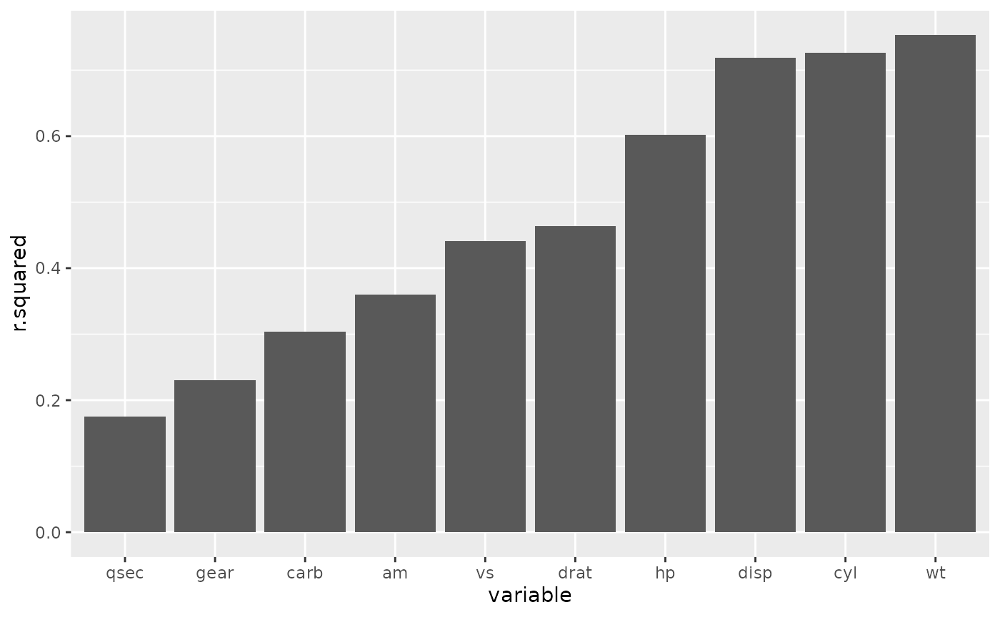

This tutorial explains different methods to run an analysis in parallel that are helpful when working on the cloud. All the scripts referenced below can be found in the cloudDemo GitHub
Running the analysis in parallel
So far our analysis is run sequentially so it will not be able to
take advantage of the multiple cores available on a cloud machine. To
make use of parallel computing we can set up our script to run each
model on a separate core. Because this example is so simple I have added
a delay in the function so we can see the benefit of running in
parallel. There are many ways to do this and I will explain a few
options. One option is to create a parallel backend in R using something
like the future package. This can be quite straight forward
and there are packages to connect this with familiar methods of
iterating (eg for loops, lapply or
purrr::map). This can get a bit tricky in that you are
typically running only parts of the script on multiple cores and you
need to make sure the right dependencies are available on the workers.
future manages this for the most part but see https://future.futureverse.org/articles/future-4-issues.html
for tips when that fails.
Using the future and furrr packages
future sets up the infrastructure needed to run things
in the background. To initialize this you run
future::plan("multisession") which will use all
future::availableCores() by default. furrr is
a parallelized version of purrr which allows you to iterate
over elements in a list on separate cores. See script
“analyses/02_run_model_furrr.R” for an example.
Running the tasks in parallel on multiple virtual machines
Instead of setting up a script to run in parallel on one machine we can split the job into multiple tasks that can run independently on separate machines. This is useful because each task will be contained in a separate process so if one iteration fails it will not impact the rest. The downside is that the whole script must be run in each task and each node will have to be set up with dependencies installed separately.
To set this up we need to pass an argument to the R script that the task will run to tell it which iteration to run. The bash command to run one iteration would look like:
Rscript analyses/scripts/04_run_model_multitask.R 1And in the R script “analyses/scripts/04_run_model_multitask.R”
commandArgs(trailingOnly = TRUE) is used to access the
number passed to the script (eg. 1). The number is then used to select
the variable to test and to name the output of the task in a unique way.
The output of each task is saved and downloaded so that we can compile
the results and create our figure.
r2_tab <- list.files(here::here("analyses/data/derived-data"), pattern = "*.csv", full.names = TRUE) |>
purrr::map_dfr(read.csv) |>
dplyr::mutate(variable = reorder(variable, r.squared))
#> Error in get(paste0(generic, ".", class), envir = get_method_env()) :
#> object 'type_sum.accel' not found
ggplot2::ggplot(r2_tab, ggplot2::aes(variable, r.squared))+
ggplot2::geom_col()
For an example of how to run this whole analysis from the command line see “analyses/scripts/run_azure_autoscale.sh” which also serves as an example of setting up autoscaling. Autoscaling automatically increases or decreases the number of nodes in a pool depending on how many tasks are waiting to start and how many are completed.